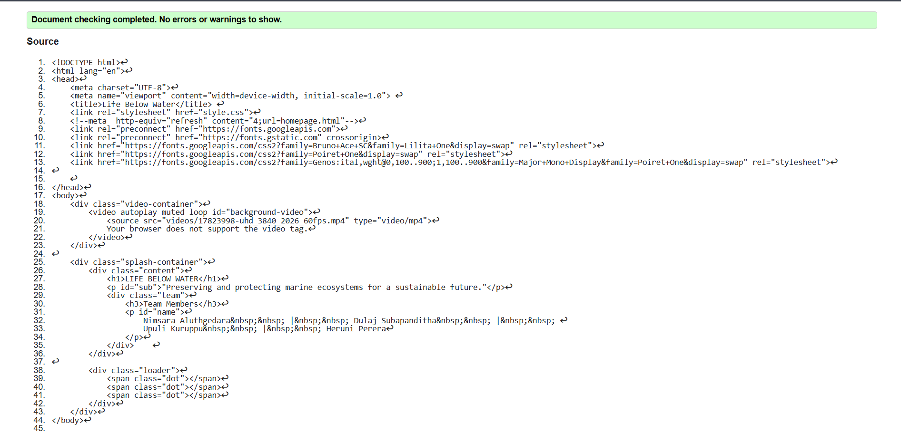
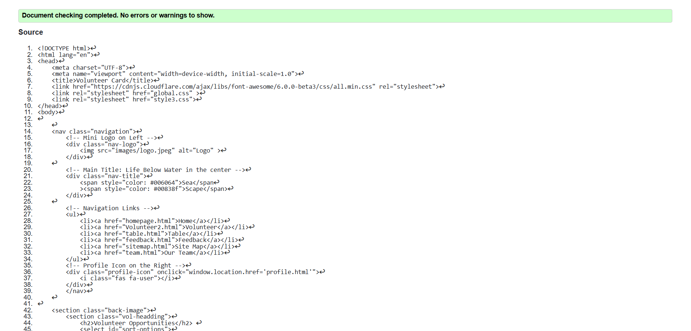
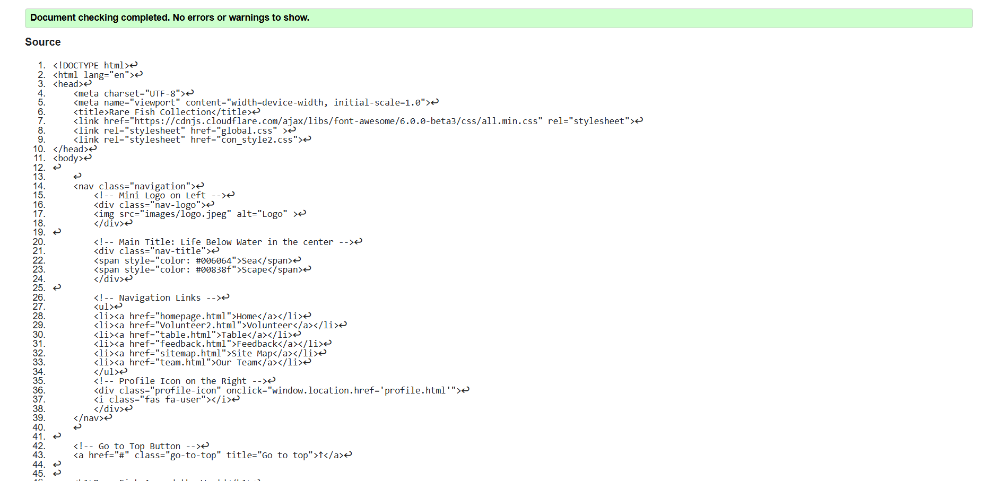

Splash Page validation report
The HTML is well-structured in terms of syntax and semantics. Adding a few media fallbacks and deleting unused code here and there should provide for clearer text. The styling is pretty, featuring external fonts and a video background. Optimizing the video size and ensuring that it is compatible with browsers could improve performances. The loader adds to the interactivity yet should be optimized in terms of efficiency. The whole page loads fine without any noticeable issue, however, minor fixes in accessibility and performance will take the user experience to a sweeter place.

Back to Page Editor page
Volunteer Page validation report
The validation report indicated that while the HTML structure is well-organized with appropriate use of semantic elements and uniform styling, work on certain areas-adding alt for each image and better file paths-would take accessibility and usability to the next level.
Page performance, as far as loading is concerned, was smooth; however, image size reductions and media file optimizations can step things up a notch. Also, consistency in navigation links throughout all pages will surely enhance the users' experience. Overall, the design is useful and aesthetically pleasing. Minor validation warnings regarding accessibility and optimization, once corrected, will further enhance the efficiency and responsiveness of the page.

Back to Page Editor page
Content Page validation report
After validating the pages I implemented, I found key areas that needed fixing. The validation process helped standardize a few minor HTML errors, such as missing alt attributes for some images and eld nested elements. These were solved to enhance accessibility and enhance semantic structure.
In addition, CSS validation found some redundant properties and minor inconsistencies in the stylesheet optimized to do better and more maintainable. From a usability standpoint, tests for navigation and responsiveness were conducted across different devices for a seamless user experience.
Overall, the validation process led to further refinement into a website more compliant with web standards, thus improving its accessibility and overall performance. From here on in, regular checks shall be made in terms of validation with respect to the workflow in development practice to maintain code quality and seamless user experience.
